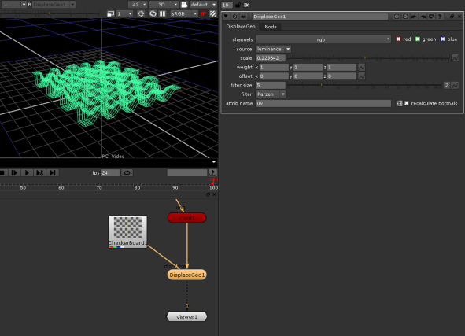

使用 “置换” 节点，可以根据图像修改几何图形。使用节点时，每个顶点沿其法线位移，其值对应于顶点的 uv 属性指向的图像像素。像素值越高，位移越大。
下图说明了 DisplaceGeo 节点背后的原理。卡片节点被修改为类似于棋盘图像的图案。
|
 |
|
使用 “置换” 节点修改几何图形。 |
| 1。 | 选择 3D > 修改 > DisplaceGeo 要插入 在要修改的 3D 对象后的任何位置置换 gegeo 节点。 |
| 2. | 将查看器附加到节点以查看您的更改。 |
| 3. | 在节点的控件中，使用 显示 下拉菜单，选择在对对象进行更改时在查看器中查看对象的方式。 |
| 4. | 阅读您的图像地图，并将其连接到 DisplaceGeo 节点 取代 输入。 |
| 5. | 调整以下控件: |
• 从 渠道 下拉菜单和复选框，选择用于位移值的通道。
• 从 源 下拉菜单中，选择置换值的源。例如，如果您选择 Rgb 或 Rgba 从 渠道 下拉菜单中，您可以使用红色、绿色、蓝色或 alpha 通道或像素亮度作为源。您也可以选择 Rgb 相对 按 rgb 量移动 x 、 y 和 z 轴上的顶点，或 Rgb 绝对 将顶点移动到 rgb 中的值。
• 要定义位移的比例，请调整 规模 滑块。值越高，位移越大。
• 要赋予 x 、 y 和 z 不同的权重，请在 重量 字段。默认情况下，每个权重都设置为 1。如果不想更改值，请将其权重设置为 0。
• 要偏移 x 、 y 和 z 值，请在 偏移 字段。例如，如果在 “y 偏移” 字段中输入 0.5，0.5 将添加到 y 值中。
• 要更改置换前应用于图像的过滤大小，请调整 过滤器大小 滑块。
• 要选择置换前应用于图像的过滤算法，请从 过滤器 下拉菜单。有关更多信息，请参见 选择过滤算法 .
• 要更改用作顶点 UV 坐标以查找图像像素的属性的名称，请在 Attrib 名称 字段。
• 通常，顶点移动后法线不正确。要在置换后重新计算它们，请检查 重新计算法线 .
|
|